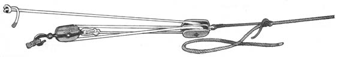

There are several kinds of line with differing characteristics.
MANILLA, a natural fibre, is smooth and strong. It is inelastic enough to set fast, and was once the choice for fine yacht rope. It is still an excellent all-round line.
HEMP is not as strong as manilla, and is more susceptible to decay. In the old days of sail, hemp was soaked in tar and used as standing rigging because it is extremely inelastic and will not stretch out of tension. Hemp is seldom used today, as a rope.
COTTON, another natural fibre, is weak and decay-prone. It is white and kind to the hands, but beyond a few decorative uses, it is not a reliable line.
NYLON is wonderfully strong. A synthetic fibre, it is rotproof. It has great elasticity. Because it stretches, it is often used where shock loads are applied-the elasticity cushions the jolt. For this reason anchor and docking lines are nylon.
DACRON is another synthetic, almost as strong but less elastic. It, too, is rotproof. Because it will not stretch as much, it is used as running, rigging on modern boats.
Line can be laid, made up of 3 (and rarely 4) twisted strands; or it can be braided, usually with an outer shell and an inner core.
Twine, cord, thread and small diameter line are grouped under the heading of small stuff, indispensable for a hundred wrappings and fastenings around a boat or home. Marline falls in this category . It is tar-soaked hemp twine of two strands, much used at sea for siezings, whippings and servings because the inelastic hemp, slightly sticky with tar, holds firm and long.
CARE of line preserves its strength. Dampness is the enemy of manilla, hemp, and cotton, because destructive mildew will grow within their porous strands. After a soaking, natural fibre ropes should be dried by flaking them out in the sun. To a smaller extent, sunlight is the enemy of synthetic fibres.
CUTTING rope is simple. Laying the edge of a knife against the line and tapping it through with a lid or mallet makes a clean cut. Better than a laser.
WHIPPING with nedle and twine is very secure and resistant to chafe. Waxed linen or polyester twine is drawn through one strand to a stoper knot about 2 diameters from the bitter end. Wrap tightly to within half a diameter from the end, then pass the needle through one strand, crevice to crevice over the wrapping. The needle passes from that crevice over the wrapping, toward the end. Needle and twine pass through a strand to the remaining crevice, where it again follows the line away fro the end and across the wrapping. It passes through a final strand and is secures with 2 half-hitches around one of the overlaying verticals.
COOLING is important in keeping your line kink-and tangle-free. It is advisable to coil in one, consistent way so a line can always be freed quickly even in the dark. This sea-gasket is paricularly secure: three turns are taken toward the top, a bight of the end is stuck through flipped over the top and snugged. Lengths of small stuff can be secured with this unusual holdfast.
TAKE A TURN is a primary rule in line-handling. A few turns around a post or timber will enable one man to safely hold and slack away to forces that would drag several jollly tars across the deck.
A strong, neat EYESPLICE is a matter of pride as well as convenience. A good eyesplice is stronger than a bowline, more compact, and always ready to drop over a post or bollard. The eye splice is little more than the strands of the end woven into the standing part of the line, so begin by unlaying the 3 strands back from the bitter end to a seizing of small stuff. Wrap the ends of the strands with a temporary whipping, or even masking tape. To make the loop of the eye lie open, twist the rope hald a turn clockwise before STICKING. Sticking is the critical part of splicing -getting each end strand stuck under the proper strand in the standing part. In order, the strands are stuck; furthest left end-strand under the uppermost strand; middle under the middle strand; right srand under the lowest strand from behind. One end-strand should now emerge from each crevice. When first stuck, the strands are given a half-turn to tighten them, and then are drawn up firmly to into the crotch of the eye. Each end-strand, in turn, is passed over one strand of the standing part and under the next, giving it half a turn to unlay it and make it wrap flatter. Tuck the strands 3 or 4 times each. Roll the splice under your foot to form it and even the strains within it. The temporary whippings can be cast off, the ends cut away in a taper, and a permanent whipping cast around them. A wooden fir or a marlinspike can be used to open the lay of stiff rope. The bitter end of a line can be finished by splicing the strands back into themselves, first CROWNING them (sticking each strand through a loop formed by the next strand). Though sailors call this several rude names, it is technically a BACKSPLICE.
These 3 knots can be very useful in lashing down and making fast. The BOWLINE is what every knot should be: quick to tie (especially with this one-hand method), secure, strong, and easy to untie. Holding the end in the right hand, place it across the standing part -twist hand and end over, under and back up so that the loop is formed around your wrist -pass the end behind the standing part and end down through the loop-snug all four line.
The ROLLING HITCH is an excellent holdfast for lengthwise pull, as along a spar or another line. Wrap the line twice around back toward the direction of pulls-pass the end across the wraps, away from the pull, and wrap once-the end is tucked under the lead of the last wrap and the knot is snugged.
This figure-8-in-the-bight is sometimes useful for applying tension, since it acts as a crude pulley. In the arrangement at the right, it afforsds a 3-fold advantage. Its disadvantage is that it will jamb under load and may require a marlinspike to be untied.
|
|
 |
|
|
|
|
|
|
|
|
|